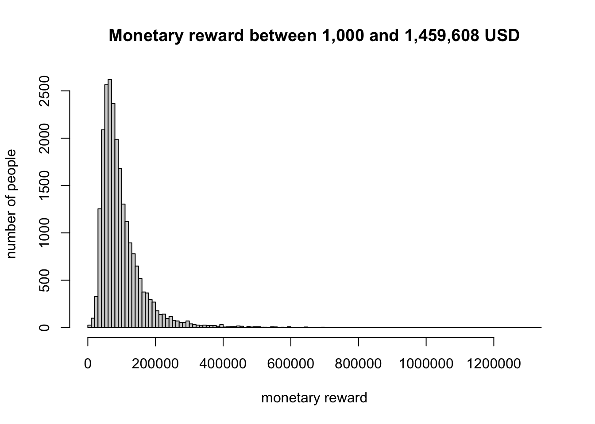
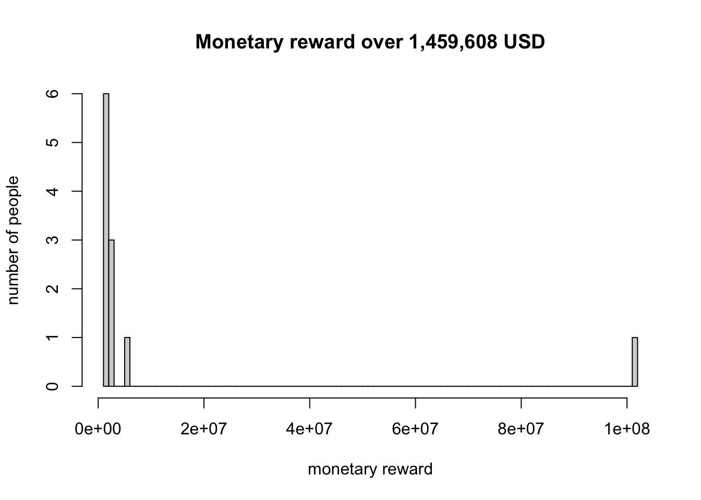
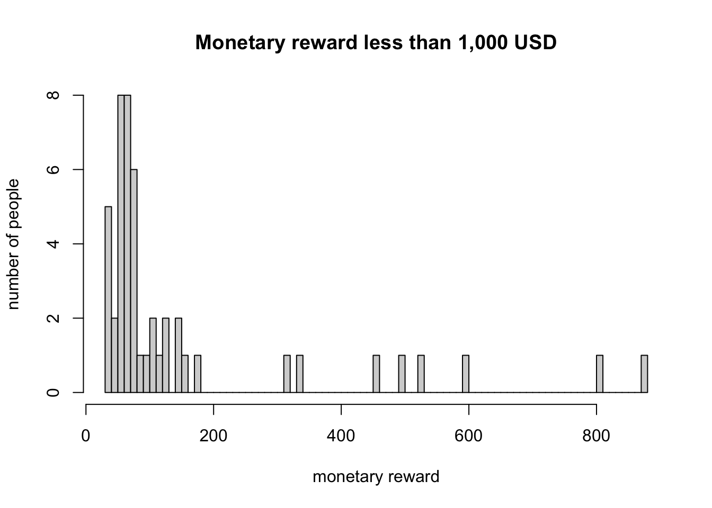

winedata <- read.table("wine.data", sep = ",")
colnames(winedata) <- c("class", "alcohol", "acid", "ash", "alcalinity",
"magnesium", "phenols", "flavanoids", "nonflavanoid_phenols",
"proanthocyanins", "color_intensity", "hue", "protein", "proline") Problem Set 1
GitHub repository link : https://github.com/tedheo10/homework1_STATS506
## Problem1 - Wine data
P1-a. import “wine.data” into a data.frame in R
P1-b. check the number of wines within each class
[class1 = 59, class2 = 71, class3 = 48]
wineclass <- winedata$class
count <- c(length(which(wineclass==1)), length(which(wineclass == 2)),
length(which(wineclass == 3)))
report <- c(59, 71, 48)
if(count[1] == report[1] & count[2] == report[2] & count[3] == report[3])
{
print("correct as reported in wine.names")
} else {
print("wrong as reported in wine.names")
}[1] "correct as reported in wine.names"
P1-c-1. the correlation between alcohol content and color intensity
the correlation : 0.5463642
alcohol <- winedata$alcohol
color <- winedata$color_intensity
cor(alcohol, color)[1] 0.5463642
P1-c-2. the highest and the lowest correlation
the highest : class1(0.4082913)
the lowest : class2(0.2697891)
class <- winedata$class
alcohol1 <- winedata$alcohol[winedata$class == 1]
alcohol2 <- winedata$alcohol[winedata$class == 2]
alcohol3 <- winedata$alcohol[winedata$class == 3]
color1 <- winedata$color[winedata$class == 1]
color2 <- winedata$color[winedata$class == 2]
color3 <- winedata$color[winedata$class == 3]
gcor <- c(cor(alcohol1, color1), cor(alcohol2, color2),
cor(alcohol3, color3))
gcor [1] 0.4082913 0.2697891 0.3503777
P1-c-3. the alcohol content of the wine with the highest color intensity
the alcohol content with the hightest color intensity : 14.34
length(which(color == max(color)))[1] 1alcohol_hcolor <- winedata$alcohol[winedata$color_intensity == max(color)]
alcohol_hcolor[1] 14.34
P1-c-4. the percentage of the wines with a higher content of proanthocyanins compare to ash
the percentage : 8.426966%
proanthocyanins <- winedata$proanthocyanins
proan_higher <- winedata$proanthocyanins[winedata$proanthocyanins > winedata$ash]
length(proan_higher) / length(proanthocyanins) * 100[1] 8.426966
P1-d. table for the average value of each variable
the table : average_table
average_table <- matrix(0, nrow = 4, ncol = length(colnames(winedata))-1)
colnames(average_table) <- colnames(winedata[2:14])
rownames(average_table) <- c("overall", "class1", "class2", "class3")
cal_mat <- as.matrix(winedata)
n <- ncol(cal_mat)-1
ave_overall <- numeric(n)
ave_class1 <- numeric(n)
ave_class2 <- numeric(n)
ave_class3 <- numeric(n)
for ( i in 1:n) {
ave_overall[i] <- mean(cal_mat[,i+1])
ave_class1[i] <- mean(cal_mat[cal_mat[,1] == 1, i+1])
ave_class2[i] <- mean(cal_mat[cal_mat[,1] == 2, i+1])
ave_class3[i] <- mean(cal_mat[cal_mat[,1] == 3, i+1])
}
average_table["overall",] <- ave_overall
average_table["class1",] <- ave_class1
average_table["class2",] <- ave_class2
average_table["class3",] <- ave_class3
average_table alcohol acid ash alcalinity magnesium phenols flavanoids
overall 13.00062 2.336348 2.366517 19.49494 99.74157 2.295112 2.0292697
class1 13.74475 2.010678 2.455593 17.03729 106.33898 2.840169 2.9823729
class2 12.27873 1.932676 2.244789 20.23803 94.54930 2.258873 2.0808451
class3 13.15375 3.333750 2.437083 21.41667 99.31250 1.678750 0.7814583
nonflavanoid_phenols proanthocyanins color_intensity hue protein
overall 0.3618539 1.590899 5.058090 0.9574494 2.611685
class1 0.2900000 1.899322 5.528305 1.0620339 3.157797
class2 0.3636620 1.630282 3.086620 1.0562817 2.785352
class3 0.4475000 1.153542 7.396250 0.6827083 1.683542
proline
overall 746.8933
class1 1115.7119
class2 519.5070
class3 629.8958
P1-e. t-test to examine whether the level of phenols differs across the three classes
We can reject the hypothesis that the level of phenols is the same across the three classes because all three p-values are less than 0.01. So we can conclude that the level of phenols differs across the three classes.
t-test p-value between class1 and class2 : 1.889e-11
t-test p-value between class1 and class3 : < 2.2e-16
t-test p-value between class2 and class3 : 1.622e-10
phenols1 <- winedata$phenols[winedata$class == 1]
phenols2 <- winedata$phenols[winedata$class == 2]
phenols3 <- winedata$phenols[winedata$class == 3]
t.test(phenols1, phenols2)
Welch Two Sample t-test
data: phenols1 and phenols2
t = 7.4206, df = 119.14, p-value = 1.889e-11
alternative hypothesis: true difference in means is not equal to 0
95 percent confidence interval:
0.4261870 0.7364055
sample estimates:
mean of x mean of y
2.840169 2.258873 t.test(phenols1, phenols3)
Welch Two Sample t-test
data: phenols1 and phenols3
t = 17.12, df = 98.356, p-value < 2.2e-16
alternative hypothesis: true difference in means is not equal to 0
95 percent confidence interval:
1.026801 1.296038
sample estimates:
mean of x mean of y
2.840169 1.678750 t.test(phenols2, phenols3)
Welch Two Sample t-test
data: phenols2 and phenols3
t = 7.0125, df = 116.91, p-value = 1.622e-10
alternative hypothesis: true difference in means is not equal to 0
95 percent confidence interval:
0.4162855 0.7439610
sample estimates:
mean of x mean of y
2.258873 1.678750 Problem2 - AskAManager.org Data
P2-a. import AskAManager.csv into a data.frame
salary <- read.csv("AskAManager.csv")
P2-b. simplify the variable names
colnames(salary) <- c("number", "time", "age", "industry", "title",
"title_context", "salary", "bonus", "currency",
"currency_other", "income_context", "country",
"state", "city", "experience", "experience_field",
"education", "gender", "race")
P2-c. restrict the data to those paid in USD
the number of observations before : 28,062
the number of oberservations after the restriction : 23,374
length(salary$currency)[1] 28062length(salary$currency[salary$currency == "USD"])[1] 23374salary_res <- salary[salary$currency == "USD", ]
nrow(salary_res) == length(salary$currency[salary$currency == "USD"])[1] TRUE
P2-d. Eliminate any rows for which their age, years of experience in their field, and years of experience total are impossible
the number of observation after the elimination : 23,116
age <- salary_res$age
field <- salary_res$experience_field
total <- salary_res$experience
age[!duplicated(age)][1] "25-34" "45-54" "35-44" "18-24" "65 or over"
[6] "55-64" "under 18" field[!duplicated(field)][1] "5-7 years" "2 - 4 years" "21 - 30 years" "11 - 20 years"
[5] "8 - 10 years" "1 year or less" "31 - 40 years" "41 years or more"total[!duplicated(total)][1] "5-7 years" "2 - 4 years" "8 - 10 years" "21 - 30 years"
[5] "11 - 20 years" "41 years or more" "31 - 40 years" "1 year or less" age_kind <- c("25-34" = 16, "45-54" = 36, "35-44" = 26, "18-24" = 6,
"65 or over" = 56, "55-64" = 46, "under 18" = 0)
experience_kind <- c("5-7 years" = 5, "2 - 4 years" = 2,
"8 - 10 years" = 8, "21 - 30 years" = 21,
"11 - 20 years" = 11, "41 years or more" = 41,
"31 - 40 years" = 31, "1 year or less" = 1 )
age_trans <- age_kind[age]
field_trans <- experience_kind[field]
total_trans <- experience_kind[total]
n_usd <- nrow(salary_res)
memo <- logical(n_usd)
for(i in 1:n_usd) {
# if age < 18, eliminate the data
# if age - 18 < field experience, eliminate the data
# if age - 18 < total experience, eliminate the data
# if total experience < field experience, eliminate the data
if(age_trans[i] == 0) {
memo[i] = FALSE
}
else if(field_trans[i]>age_trans[i]) {
memo[i] = FALSE
}
else if(total_trans[i]>age_trans[i]) {
memo[i] = FALSE
}
else if(field_trans[i]>total_trans[i]) {
memo[i] = FALSE
}
else {
memo[i] = TRUE
}
}
#test whether age is under 18
salary_year <- salary_res[memo, ]
salary_year$age[!duplicated(salary_year$age)] [1] "25-34" "45-54" "35-44" "18-24" "65 or over"
[6] "55-64" #test example for whether their is reasonable with total experience
experience_test <- salary_year$age[salary_year$experience
== "41 years or more"]
experience_test[!duplicated(experience_test)] [1] "65 or over" "55-64" #test example for whether their is reasonable with field experience
fieldexp_test <- salary_year$age[salary_year$experience_field
== "41 years or more"]
fieldexp_test[!duplicated(fieldexp_test)] [1] "65 or over" "55-64" #test example for whether filed experience is less than total experience
exp_fieldexp_test <- salary_year$experience_field[salary_year$experience
== "8 - 10 years"]
exp_fieldexp_test[!duplicated(exp_fieldexp_test)] [1] "5-7 years" "2 - 4 years" "8 - 10 years" "1 year or less"nrow(salary_year)[1] 23116
P2-e. eliminate any rows with extremely low or high salaries.
The other monetary compensation is added to salalry in order to eliminate false slalrries.
The extreme high salary : 1459608 USD (mean + 2*standard deviation)
-> There are values on the right side of the distribution that differ from the mean by more than twice the standard deviation.
The extreme low salary : 1,000 USD
-> There’s a very thick tail on the left side of the distribution.
The sample size : 23044
income <- salary_year$salary
bonus <- salary_year$bonus
bonus[is.na(bonus)] <- 0
monetary_reward <- income + bonus
summary(monetary_reward) Min. 1st Qu. Median Mean 3rd Qu. Max.
0 58000 81000 106240 120000 102000000 n_year <- length(monetary_reward)
mean_monetary <- mean(monetary_reward)
sd_monetary <- sd(monetary_reward)
mean_monetary + 2*sd_monetary[1] 1459608mean_monetary - sd_monetary[1] -570443.5hist(monetary_reward[monetary_reward <= 1459608 & monetary_reward
>= 1000], breaks = 100, main =
"Monetary reward between 1,000 and 1,459,608 USD",
xlab = "monetary reward", ylab = "number of people") 
hist(monetary_reward[monetary_reward > 1459608], breaks = 100, main =
"Monetary reward over 1,459,608 USD",
xlab = "monetary reward", ylab = "number of people") 
hist(monetary_reward[monetary_reward < 1000 & monetary_reward > 0],
breaks = 100, main = "Monetary reward less than 1,000 USD",
xlab = "monetary reward", ylab = "number of people")
salary_year$monetary_reward <- monetary_reward
salary_monetary <- salary_year[monetary_reward <= 1459608 & monetary_reward >= 1000, ]
nrow(salary_monetary)[1] 23044Problem 3 - Palindromic Numbers
P3-a. function “isPalindromic” that check if a given positive integer is a palindromic
#' Palindromic of Integers
#'
#' Determine whether a positive intger is palindromic or not
#'
#' This function takes a positive integer x and returns a logical value
#' whether the integer is a palindromic number or not and return reversed #' number to show that whether the reversed is same with the original
#' number.
#'
#' @param x a positive integer
#' @param na.rm logical, should NA's be removed? Default is FALSE
#' @return list of a logical value and a numeric value
isPalindromic <- function(x, na.rm = FALSE) {
if(!is.numeric(x)) {
# this code is from STATS 506 class note
warning("x must be a positive integer, attemting to convert")
suppressWarnings(x <- as.numeric(x))
if(all(is.na(x))) {
stop(
"x must be a positive integer or convertible to a positive integer")
}
}
if(length(x) == 0) {
# this code is from STATS 506 class note
stop("x must have strictly positive length")
}
if(!is.logical(na.rm)) {
# this code is from STATS 506 class note
warning("na.rm must be logical")
}
if(x <= 0 ) {
stop(
"x must be a positive integer or convertible to a positive integer")
}
if(x != round(x)) {
stop(
"x must be a positive integer or convertible to a positive integer")
}
y <- as.character(x)
z <- as.numeric(unlist(strsplit(y, "")))
k <- length(z)
check_palindromic <- logical(k)
reverse <- numeric(k)
for(i in 1:k) {
if(z[i] == z[k+1-i]) {
check_palindromic[i] <- TRUE
} else {
check_palindromic[i] <- FALSE
}
reverse[i] <- z[k+1-i]
}
reverse_return <- as.numeric(paste(reverse, collapse = ""))
if(all(check_palindromic == TRUE)) {
return(list(isPalindromic = TRUE, reversed = reverse_return))
}
else {
return(list(isPalindromic = FALSE, reversed = reverse_return))
}
}
isPalindromic(1100) # check the "isPalindromic()" function $isPalindromic
[1] FALSE
$reversed
[1] 11
P3-b. create a nextPalindrome function that finds the next palindromic number strictly greater than the input
#' Next Palindrome
#'
#' Find the next palindromic number strictly greater than the input
#'
#' This function takes a positive integer x and check from x+1 to the next #' paliindromic number whether the integer is a palindromic number or not
#' and return the next palindromic number.
#'
#' @param x a positive integer
#' @param na.rm logical, should NA's be removed? Default is FALSE
#' @return a numeric value
nextPalindrome <- function(x, na.rm = FALSE) {
if(!is.numeric(x)) {
# this code is from STATS 506 class note
warning("x must be a positive integer, attemting to convert")
suppressWarnings(x <- as.numeric(x))
if(all(is.na(x))) {
stop(
"x must be a positive integer or convertible to a positive integer")
}
}
if(length(x) == 0) {
# this code is from STATS 506 class note
stop("x must have strictly positive length")
}
if(!is.logical(na.rm)) {
# this code is from STATS 506 class note
warning("na.rm must be logical")
}
if(x <= 0 ) {
stop(
"x must be a positive integer or convertible to a positive integer")
}
if(x != round(x)) {
stop(
"x must be a positive integer or convertible to a positive integer")
}
y <- as.character(x+1)
z <- as.numeric(unlist(strsplit(y, "")))
k <- length(z)
check <- logical(k)
next_palindrome <- numeric(k)
while(!all(check == TRUE)) {
for(i in 1:k) {
if(z[i] == z[k+1-i]) {
check[i] <- TRUE
} else {
check[i] <- FALSE
}
next_palindrome[i] <- z[i]
}
y <- as.character(as.numeric(y)+1)
z <- as.numeric(unlist(strsplit(y, "")))
k <- length(z)
}
next_palindrome <- as.numeric(paste(next_palindrome, collapse = ""))
return(nextPalindrome = next_palindrome)
}
nextPalindrome(1523) # check the "nextPalindrome()" function[1] 1551
P3-c. Use above functions to find the next palindrome for each of the following: (391, 9928, 19272719, 109, 2)
i. 391 : 393
ii. 9928 : 9999
iii. 19272719 : 19277291
iv. 109 : 111
v. 2 : 3
nextPalindrome(391)[1] 393nextPalindrome(9928)[1] 9999nextPalindrome(19272719)[1] 19277291nextPalindrome(109)[1] 111nextPalindrome(2)[1] 3